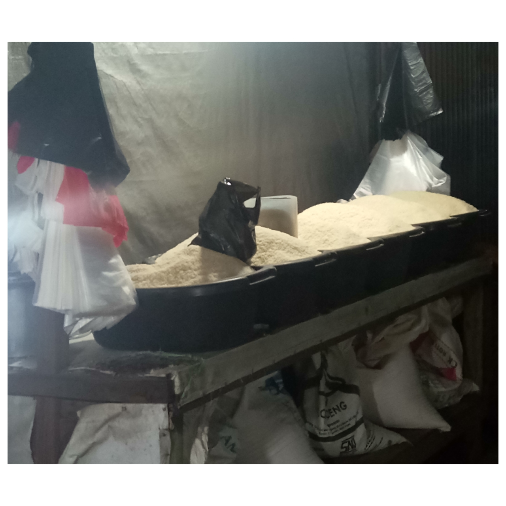

Gambar 2.12. Beras (Sumber: Dokumen Pribadi)
Seorang pedagang beras menerima kiriman beras dalam karung. Pada setiap karung tertera tulisan: bruto 50 kg, dan setelah ditimbang diketahui netonya sebesar 49.965 g. Apabila pedagang tersebut menerima 50 karung, tentukan berat karung beras seluruhnya!
PENJELASAN
Diketahui:
-
Bruto adalah 50 kg (50.000 g)
-
Neto adalah 49.965 g
-
Banyak Beras adalah 50 Karung
Ditanya:
Berapa berat karung (tara) beras seluruhnya?
Jawab:
Tara = Bruto – Neto
\[ \hspace{0.9cm}=\]50.000 – 49.965
\[ \hspace{0.9cm}=\]50
Berat karung seluruhnya = Banyak Beras × Tara
\[ \hspace{4.8cm}=\] 50 × 35
\[ \hspace{4.8cm}=\] 1.750
Untung = harga jual – harga beli
\[ \hspace{1.5cm}=\]682.500 – 525.000
\[ \hspace{1.5cm}=\]157.500
Jadi berat karung seluruhnya adalah 1.750 g